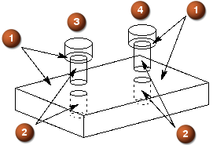
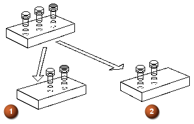

从实例特征注释
特征实例阵列中的阵列特征
在“建模”应用模块中，可以通过选择插入→关联复制→阵列特征来添加阵列特征。
在创建从实例特征阵列时，可以参考线性或圆形阵列特征，以下情况除外：
-
选择辐射选项来创建的圆形阵列特征。
-
选中对称复选框来创建的线性和圆形阵列特征。
-
使用定义的边界以及选中简化边界填充复选框来创建的线性阵列特征。
-
使用以下所有条件创建的线性阵列特征：选中使用方向 2复选框，交错列表设为方向 1或方向 2，不选中仅限框架复选框，并且不选中显示最后一行实例复选框。
有关阵列特征的更多信息，请参见建模帮助。
特征实例阵列中的约束
可以根据特征实例阵列来创建组件阵列。实例阵列中的每个特征均有一个组件，而组件会自动约束到适当的面或边。
创建从实例特征阵列时，必须首先通过装配约束来定位组件，以使组件约束到实例阵列中的一个特征。
默认情况下，首先约束的组件为模板组件。添加的任何新组件均共享模板属性。(可以随时指定新模板。)
无论何时将新的组件添加到阵列，均通过装配约束来定位组件。NX 从模板中复制装配约束，并将其应用到相应的特征。
如果更改模板装配约束导致新的组件无法正确约束，则 NX 会以绝对方式定位这些组件。
为实例集中的每个特征复制几何体时，每个组件都会独立约束。否则，每个组件都会约束到同一几何体。
示例
下图中的块是使用孔特征阵列以及相应的螺栓组件阵列创建的。

 面到面接触-对齐装配约束
面到面接触-对齐装配约束
 圆柱体到圆柱体接触-对齐装配约束
圆柱体到圆柱体接触-对齐装配约束
 此螺栓为模板。
此螺栓为模板。
 此螺栓已添加。
此螺栓已添加。
每个螺栓组件都由两个约束进行约束：轴约束到孔，螺栓面的底面约束到块的顶部。由于每个孔特征都有唯一的圆柱面，因此两个螺栓均约束到两个不同的圆柱面。每个螺栓均约束到块的同一顶面。
螺栓(3)为模板。添加了螺栓(4)，因此，螺栓上相同的面受到约束，但被约束到组件中不同的面。图中说明了特征实例阵列中的每个单元是如何独立约束到适当几何体的。
建模更改的效果
如果更改特征实例阵列中的特征数，则会更新组件数。此外，实例集中的单独特征和组件可能会被使特定特征无效的建模更改删除。
|
注释 |
仅当完全加载了包含特征实例阵列的部件时，才会更新组件阵列。如果加载的组件启用了部分加载(默认设置)，且该组件的特征实例阵列已更改，则不会更新依赖该特征实例阵列的组件阵列。 |
组件标识
组件标识基于特征标识。特征实例阵列基于作为阵列中第一个单元的主特征。这是阵列中唯一的固定位置，而其他所有特征均为主特征位置的偏置。
在修改实例阵列时保留特征标识。例如，在矩形实例阵列中，如果至少有4行和3列保留在阵列中，则位于位置(3,2) 的特征将保留在该位置。同样，约束到该特征的组件会保留在组件阵列中的位置(3,2)处。
下图显示了编辑的特征阵列参数的两种不同结果。当阵列中的特征数减少时，产生的行为由阵列中的主特征确定。

图例：(1) (2)
 主特征在右侧。
主特征在右侧。
 主特征在左侧(已删除着色的组件)。
主特征在左侧(已删除着色的组件)。